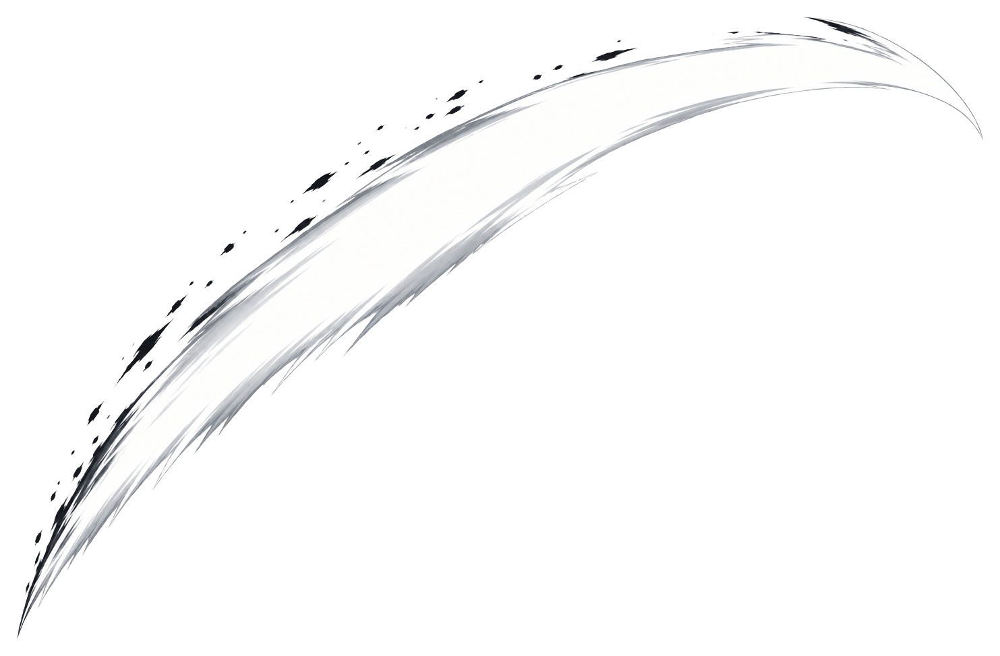
01 · Long white trail
Clean blade sweep with a long visible tail.
White, yellow, and Japanese Shodō brush directions for Shadow Clash. These are visual choices for Anthony to review. They are not installed in the game.
Blade trail rule: the leading edge follows the blade tip, while a large tail occupies the path the blade just traveled. Every attacking blade needs its own measured path. A contact slice is a separate effect that appears only when the hit connects.
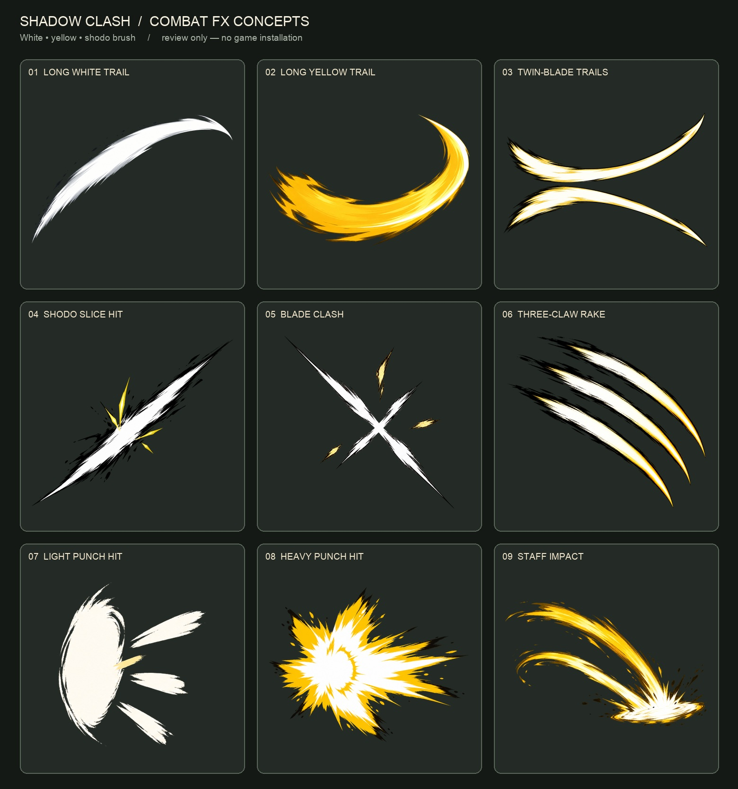

Clean blade sweep with a long visible tail.
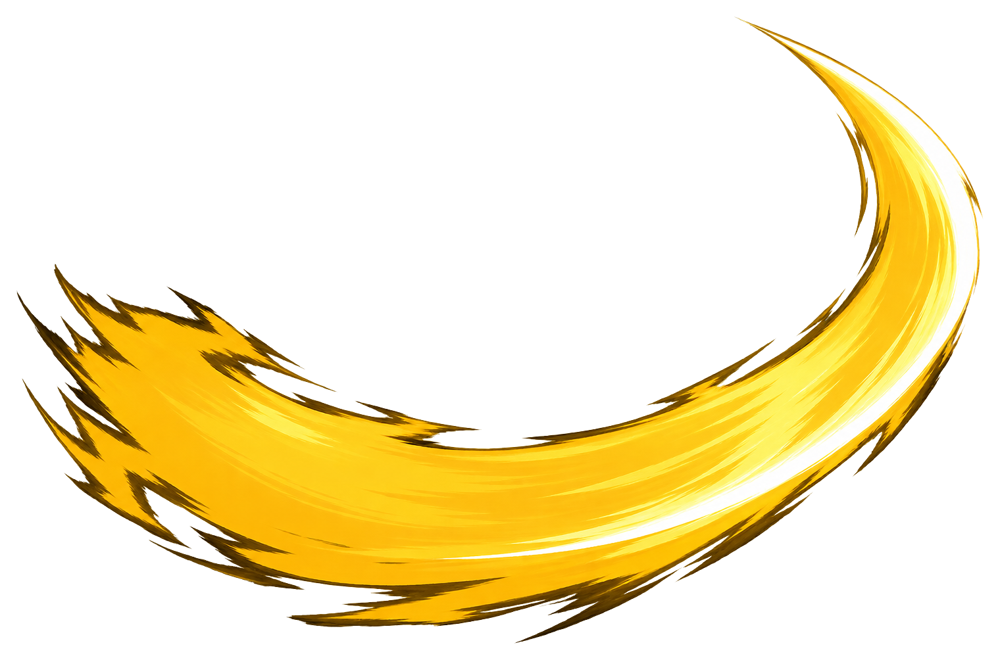
Warmer, heavier-looking sweep with brush edges.
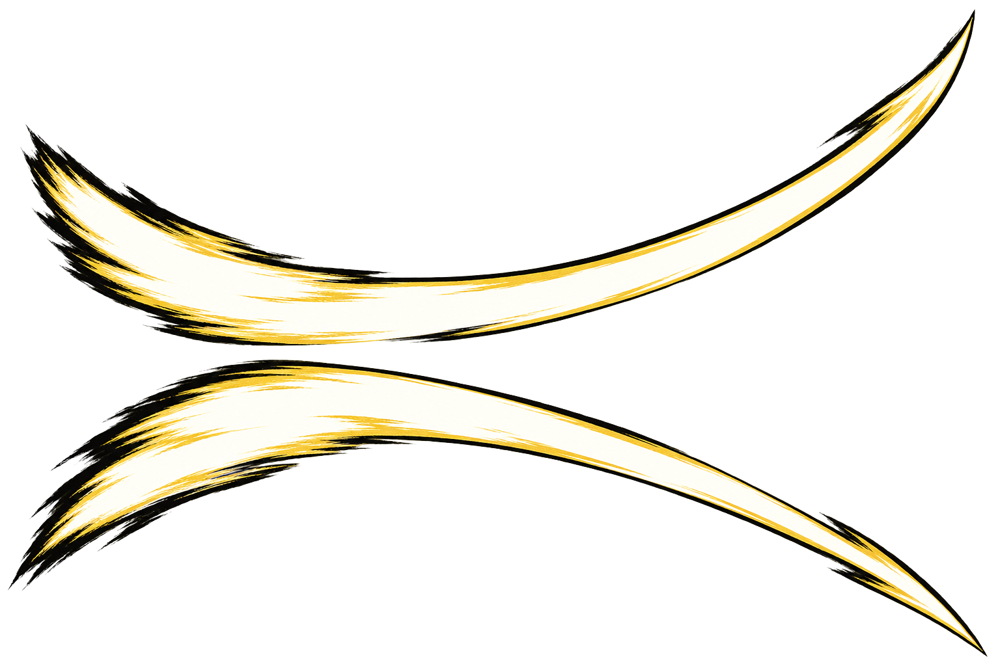
One separate path for each short blade.
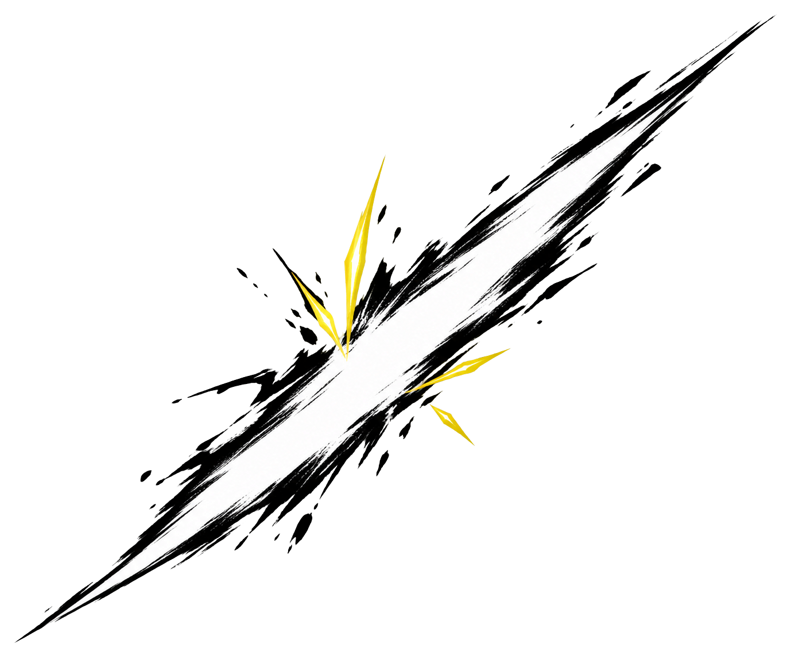
A decisive contact mark, separate from swing motion.
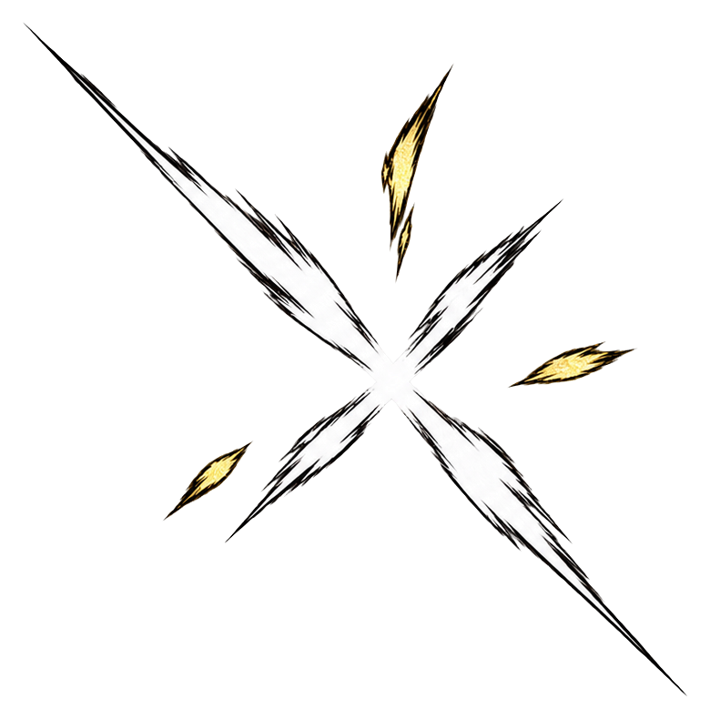
Compact mark where metal edges meet.
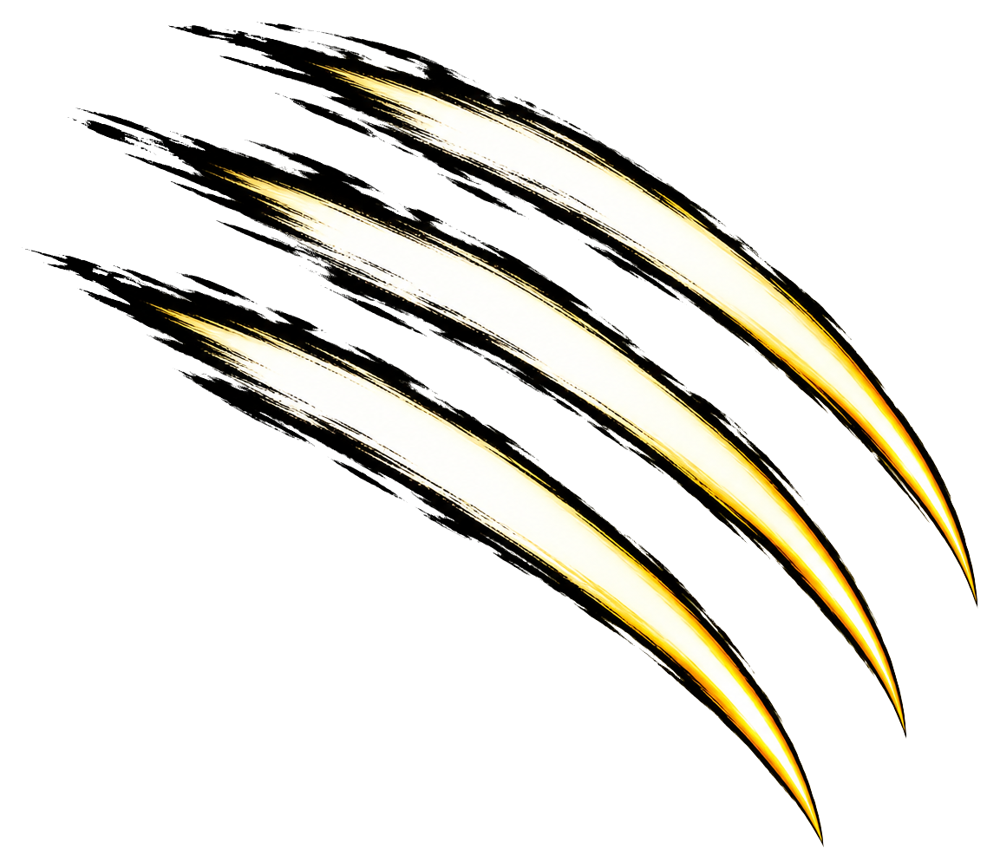
Exactly three paths for each Ember hand.
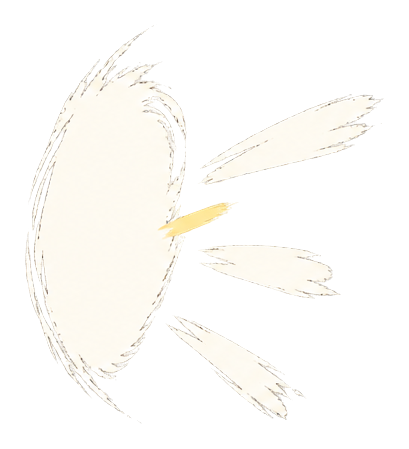
Short, tight contact without a huge explosion.
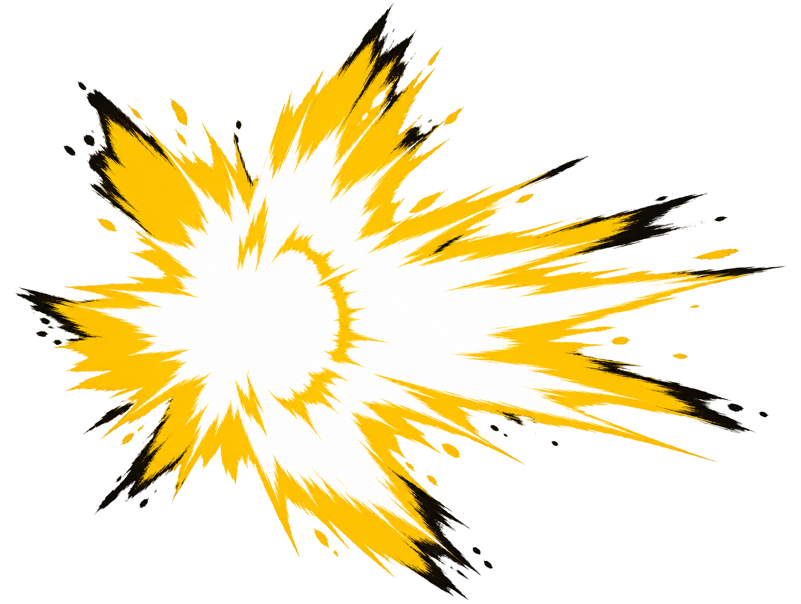
Broader hit read; size and density are open for review.
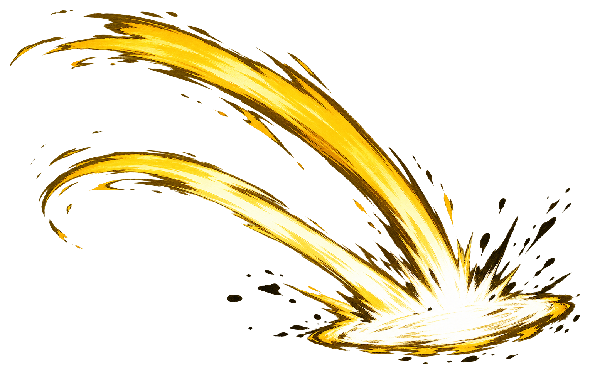
Blunt motion and contact, with no sword edge.
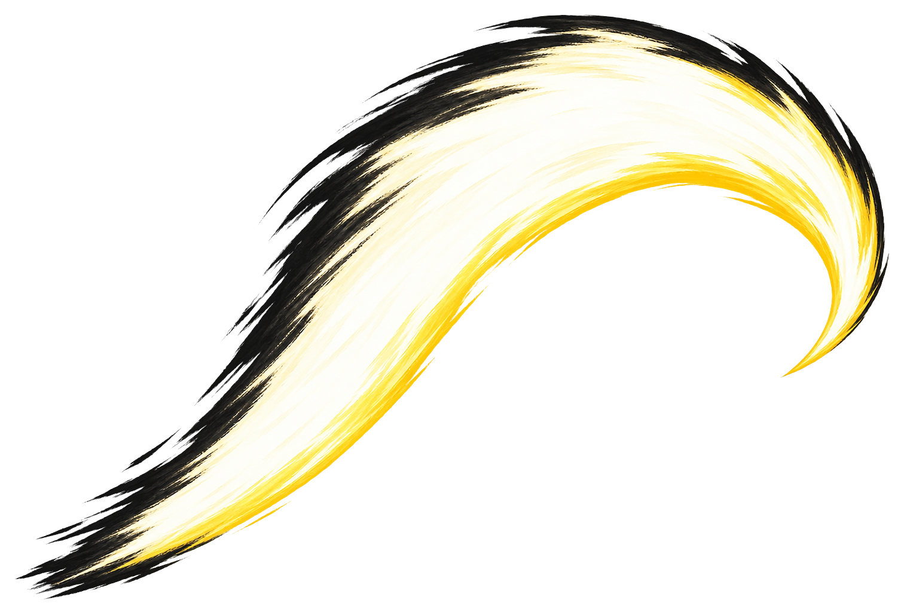
A long sweep ending in the hook's inward curl.
The diagram shows the tail growing behind a moving blade tip. Actual game paths must follow each move's drawn blade root and tip, including facing and reversed swings.
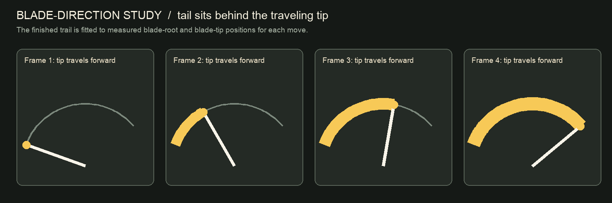
Kael's source frame has a dark gold and black arc. The white version studies recoloring the baked arc instead of removing the animation drawing. This edited image is a look study; it is not an exact replacement frame.
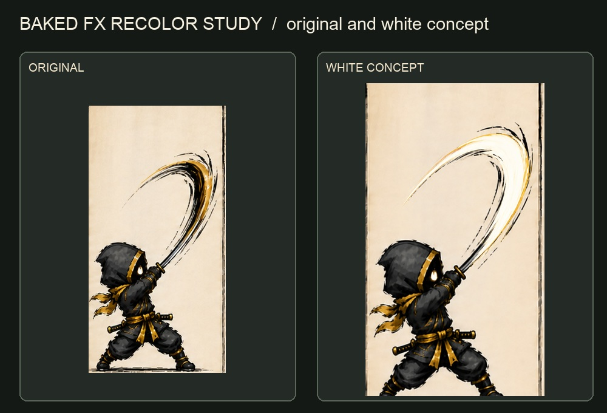
| Fighter | Effect family to review |
|---|---|
| Executioner | Long sword trail; slice contact; clash. Thrusts would use a point glint instead of a false crescent. |
| Kael | Separate long and short sword paths; twin-blade option; baked-arc recolor study. |
| Tsubasa | Separate trails for the two first-mode shinobi knives; no reserve-weapon deployment. |
| Exile | Hooked kama trail following its tip; chain and weighted ball would get separate paths. |
| Oni | Individual sword paths, with existing baked effects reviewed before any overlay. |
| Ember | Exactly three claw strokes per hand, plus a compact contact slice. |
| Mizu | Blunt staff motion and contact, not a blade slice. |
| Shin and Mokurai | Light and heavy hand-to-hand contact; no sword trail. |
Concept images were made with the built-in image editor and then prepared as clean preview cutouts. The tool did not expose a verifiable model identity. The runtime, sprite sheets, animation frames, combat data, and audio were not changed for this review.